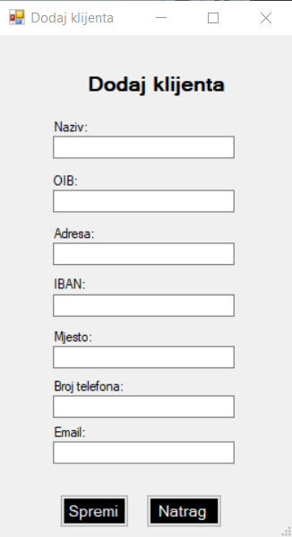
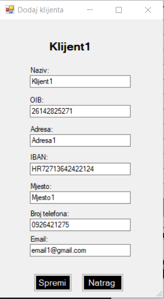

U formi za dodavanje klijenta radnik je dužan popuniti sva polja obrasca kako bi mogao unijeti klijenta u bazu. Prilikom popunjavanja potrebno je pripaziti na unos jer je sav unos validiran, odnosno ne može ubaciti nesmislene vrijednosti. Kada je radnik popunio sva polja obrasca klikne na gumb 'Spremi' i ako je sve uspješno dodan je novi klijent u bazu. Ukoliko radnik ne želi dodati novog klijenta u bazu samo klikne na gumb 'Natrag' i vrati ga na prethodnu formu.
Ova ista forma koristi se i za ažuriranje klijenta. Radnik na popisu svih klijenata selektira na nekog od klijenta te klikne na gumb 'Uredi klijenta'. Otvara mu se ova ista forma, ali razlika je u tome što je sada forma popunjena s podacima selektiranog klijenta. Radnik može mijenjati sve atribute klijenta te kada želi spremiti klikne na gumb 'Spremi'. Ukoliko ne želi spremiti klikne na gumb 'Natrag' koji ga vodi na prethodnu formu.
